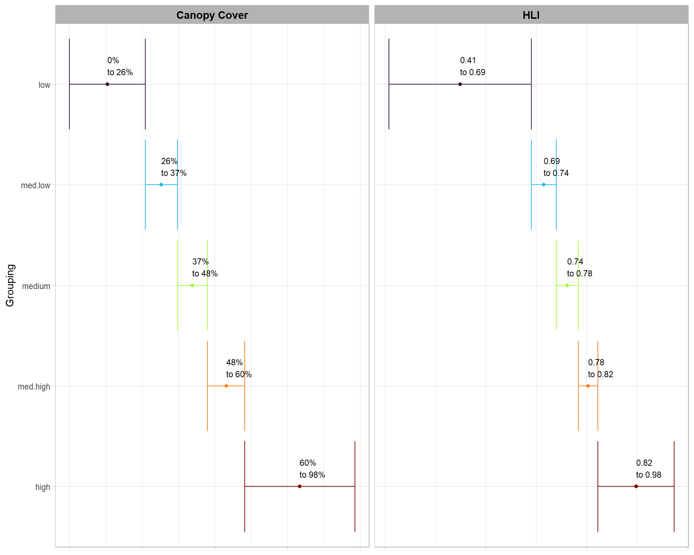

Section 5 Sample by Canopy Cover and HLI
# turn off the s2 processing
## https://stackoverflow.com/questions/68478179/how-to-resolve-spherical-geometry-failures-when-joining-spatial-data
sf::sf_use_s2(FALSE)5.1 Read Data
Vector data and forest cover data created in prior chapters.
# read
bhef_boundary <- sf::st_read("../data/bhef_boundary.gpkg")
# bhef_harvests <- sf::st_read("../data/bhef_harvests.gpkg")
# bhef_tsi <- sf::st_read("../data/bhef_tsi.gpkg")
rx_fire <- sf::st_read("../data/rx_fire.gpkg")
# # forest cov
crowns_group <- sf::st_read("../data/crowns_group.gpkg")
crowns_rast <- terra::rast("../data/crowns_st.tif")
# chm <- terra::rast("../data/chm.tif") %>%
# terra::aggregate(fact = 5, fun = "mean", na.rm = T)
# elevation
bhef_elev <- terra::rast("../data/bhef_elev.tif")
# terra::aggregate(fact = 5, fun = "mean", na.rm = T)5.2 Aspect and HLI
Aspect of a slope (the direction or azimuth that a slope faces) strongly influences potential direct incident radiation and temperature. Untransformed, aspect is a poor variable for quantitative analysis, since 1° is adjacent to 360° – the numbers are very different even though the aspect is about the same. The following equation for Heat Load Index (HLI) rescales aspect to a scale of zero to one, with zero being the coolest slope (northeast) and one being the warmest slope (southwest). HLI is a proxy for aspect-driven solar heating.
\[ \textrm{Heat load index} = \frac{1 - \cos(\theta - 45)}{2} \] where \(\theta\) = aspect in degrees east of north. While this and related equations are useful, they do not consider the steepness of the slope. For example, a 1° south-facing slope would receive the same heat load index as a 30° south-facing slope, even though the latter will be considerably warmer.
HLI calculations have been developed which combine slope, folded aspect (i.e., “southwestness”), and latitude to estimate terrain-driven solar heating at a given location (McCune & Keon 2002: eq. 2). To calculate HLI, we used equation 2 of McCune & Keon 2002: eq. 2. Higher values of HLI are typical on steep southwesterly slopes, while low values are common on steep northeasterly slopes. Moderate values are common in flatter terrain and on northwesterly and southeasterly aspects.
Aspect must first be “folded” about the north-south line, rescaling 0-360° to 0-180°, such that NE = NW, E = W, etc:
\[ \textrm{Folded aspect°} = 180° \, - \, | Aspect° – 180° | \]
# convert elevation raster from terra to stars
my_crs <- 5070 # EPSG:5070 = NAD83/Conus Albers (units = meters)
elev_stars_temp <- stars::st_as_stars(bhef_elev |> terra::project( paste0("EPSG:",my_crs) )) %>%
setNames(c("elev"))
# extract latitude degrees from stars object
lats_temp <- sf::st_coordinates(elev_stars_temp) %>%
sf::st_as_sf(coords = c("x", "y"), crs = my_crs) %>%
sf::st_transform(crs = 4326) %>%
sf::st_coordinates() %>%
dplyr::as_tibble() %>%
setNames(c("longitude","latitude")) %>%
dplyr::select(latitude)
gc()
# hli function
# This equation returns ln(Rad, MJ · cm–2 · yr–1). It can
# be returned to an arithmetic scale with the EXP(x)
# function.
hli_fn <- function(slope_rad, folded_aspect_rad, latitude_rad){
exp(
(-1*1.236) +
1.350*cos(latitude_rad)*cos(slope_rad) +
(-1*1.376)*cos(folded_aspect_rad)*sin(slope_rad)*sin(latitude_rad) +
(-1*0.331)*sin(latitude_rad)*sin(slope_rad) +
0.375*sin(folded_aspect_rad)*sin(slope_rad)
)
}
# calculate slope and aspect from DEM
topo_temp <- c(
elev_stars_temp
, starsExtra::slope(elev_stars_temp)
, starsExtra::aspect(elev_stars_temp)
) %>%
setNames(
c("elev", "slope_deg", "aspect_deg")
) %>%
dplyr::mutate(
slope_rad = pracma::deg2rad(as.numeric(slope_deg))
, aspect_rad = pracma::deg2rad(as.numeric(aspect_deg))
, folded_aspect_deg = 180 - abs(as.numeric(aspect_deg)-180)
, folded_aspect_rad = pracma::deg2rad(folded_aspect_deg)
, latitude_deg = lats_temp$latitude
, latitude_rad = pracma::deg2rad(as.numeric(latitude_deg))
, hli = dplyr::case_when(
hli_fn(slope_rad, folded_aspect_rad, latitude_rad) > 1 ~ 1
, hli_fn(slope_rad, folded_aspect_rad, latitude_rad) < 0 ~ 0
, TRUE ~ hli_fn(slope_rad, folded_aspect_rad, latitude_rad)
)
)
# convert just HLI back to terra
hli <- terra::rast((topo_temp %>% dplyr::select(hli))[]) %>%
terra::project( terra::crs(crowns_rast) ) %>%
# resample to align layers
terra::resample(y=crowns_rast, method = "bilinear") %>%
terra::crop(crowns_rast)
# rename
names(hli) <- "hli"
plot(hli, main = "HLI")# does it have the same extent?
terra::ext(hli) == terra::ext(crowns_rast)
if(FALSE){
# smooth HLI with median value in matrix
# d = 1 = 3x3 # d = 2 = 5x5 # d = 3 = 7x7
# fw_temp <- terra::focalMat(hli, d = 2, type = "rectangle")
fw_temp <- matrix(1,5,5)
hli <- terra::focal(hli, w = fw_temp, fun = "median", na.rm=T)
plot(hli, main = "HLI smooth")
# does it have the same extent?
terra::ext(hli) == terra::ext(crowns_rast)
}
# aggregate to 25m resolution
hli %>%
terra::aggregate(fact = 25, fun = "median") %>%
plot(main = "HLI aggregate")5.3 Tree Canopy Cover
The tree crown raster data represents tree crowns (interconnected crown groups or individual crowns) with minimum tree height of 2 meters created here using lidR::dalponte2016. Values of this raster are tree crown id’s.
# values
crowns_rast %>% terra::values() %>% summary()
# plot
crowns_rast %>%
terra::mask(
rx_fire %>%
sf::st_union() %>%
sf::st_buffer(100) %>%
terra::vect()
) %>%
as.data.frame(xy=T) %>%
dplyr::rename(f=3) %>%
ggplot() +
geom_tile(mapping=aes(x=x,y=y,fill=f), fill = "forestgreen", alpha = 0.8, color = NA) +
geom_sf(data = bhef_boundary, alpha = 0, lwd = 1, color = "black", linetype = "dashed") +
geom_sf(data = rx_fire, alpha = 0, lwd = 1, color = "orangered") +
geom_sf_label(data = rx_fire, aes(label = unit)
, label.size = NA
, alpha = 0
, size = 3
) +
coord_sf(expand = F) +
scale_x_continuous(expand = c(0, 0)) +
scale_y_continuous(expand = c(0, 0)) +
labs(
title = "Lidar-Derived Canopy Cover (>2m in 2017)"
, subtitle = paste0("Rx fire units")
, x=""
, y=""
# , fill = nm_temp[layer_n]
) +
theme_light() +
theme(
legend.position = "none"
, legend.direction = "horizontal"
, legend.margin = margin(0,0,0,0)
, legend.box.margin = margin(-21,0,2,0)
, legend.text = element_text(size = 7, angle = 25, hjust = 0.7)
, legend.title = element_text(size = 7)
, axis.text = element_text(size = 7)
, axis.text.x = element_text(size = 7, angle = 35, hjust = 0.7)
, plot.title = element_text(size = 10, face = "bold", margin = margin(0,0,2,0))
, plot.subtitle = element_text(size=8, face="italic", color="orangered", margin = margin(0,0,0,0))
, panel.border = element_blank()
)
# reclass crowns as 1, else 0
# reclass matrix
rcl_temp <- c(
crowns_rast %>% terra::values() %>% min(na.rm = T)
, crowns_rast %>% terra::values() %>% max(na.rm = T)
, 1
) %>%
matrix(ncol=3, byrow=TRUE)
# binary raster
iscrown_rast <- crowns_rast %>%
terra::classify(
rcl = rcl_temp
, include.lowest = T
, others = 0
) %>%
# update to 0/1 because na values are not 0
terra::subst(from=NA,to=0)
# values
iscrown_rast %>% terra::values() %>% summary()
iscrown_rast %>% terra::res()
# plot
iscrown_rast %>%
as.data.frame(xy=T) %>%
dplyr::rename(f=3) %>%
ggplot() +
geom_raster(mapping=aes(x=x,y=y,fill=as.factor(f))) +
geom_sf(data = bhef_boundary, fill = NA, color = "black", lwd = 1.1) +
scale_fill_viridis_d(na.value = "transparent")# plot zoom
iscrown_rast %>%
terra::crop(
bhef_boundary %>% sf::st_centroid() %>% sf::st_buffer(10)
) %>%
as.data.frame(xy=T) %>%
dplyr::rename(f=3) %>%
ggplot() +
geom_raster(mapping=aes(x=x,y=y,fill=as.factor(f))) +
scale_fill_viridis_d(na.value = "transparent")5.4 Aggregate and Crop to Rx fire Units
# select aggregate resolution: 25 = 25x25m grid
agg_res <- 25
# aggreaged and combine layers
layers <- c(
iscrown_rast %>%
terra::aggregate(fact = agg_res, fun = "mean")
, hli %>%
terra::aggregate(fact = agg_res, fun = "median")
) %>%
setNames(c("crowncov", "hli"))
# crop to rx fire units bounds
layers <- layers %>%
terra::mask(
rx_fire %>%
sf::st_union() %>%
terra::vect()
)
# plot
nm_temp <- c("% Canopy Cov.", "HLI")
plt_fn_temp <- function(layer_n) {
plt <- layers[[layer_n]] %>%
as.data.frame(xy=T) %>%
dplyr::rename(f=3) %>%
ggplot() +
geom_raster(mapping=aes(x=x,y=y,fill=f)) +
geom_sf(data = bhef_boundary, alpha = 0, lwd = 1, color = "black", linetype = "dashed") +
geom_sf(data = rx_fire, alpha = 0, lwd = 1, color = "orangered") +
geom_sf_label(data = rx_fire, aes(label = unit)
, label.size = NA
, alpha = 0
, size = 3
) +
coord_sf(expand = F) +
scale_fill_viridis_c(option = (8-layer_n), alpha = 0.8) +
scale_x_continuous(expand = c(0, 0)) +
scale_y_continuous(expand = c(0, 0)) +
labs(
title = nm_temp[layer_n]
, subtitle = paste0("Rx fire units")
, x=""
, y=""
, fill = nm_temp[layer_n]
) +
theme_light() +
theme(
legend.position = "bottom"
, legend.direction = "horizontal"
, legend.margin = margin(0,0,0,0)
, legend.box.margin = margin(-21,0,2,0)
, legend.text = element_text(size = 7, angle = 25, hjust = 0.7)
, legend.title = element_text(size = 7)
, axis.text = element_text(size = 7)
, axis.text.x = element_text(size = 7, angle = 35, hjust = 0.7)
, plot.title = element_text(size = 10, face = "bold", margin = margin(0,0,2,0))
, plot.subtitle = element_text(size=8, face="italic", color="orangered", margin = margin(0,0,0,0))
, panel.border = element_blank()
)
return(plt)
}
plt_list_temp <- 1:(layers %>% terra::nlyr()) %>%
purrr::map(plt_fn_temp)
# combine
cowplot::plot_grid(
plotlist = plt_list_temp
, nrow = 1
)Canopy cover (%) and HLI (median) were aggregated to a sample grid at 25m resolution from an original data resolution of 1m.
5.5 Classify Raster Grid
5.5.1 Cutpoints
cutlist <- seq(0,1,0.2)
# cutlist_df_temp <-
data.frame(
hli = stats::quantile(
layers$hli %>% terra::values()
, probs = cutlist
, na.rm = T
)
, crowncov = stats::quantile(
layers$crowncov %>% terra::values()
, probs = cutlist
, na.rm = T
)
) %>%
tibble::rownames_to_column(var="pct") %>%
tidyr::pivot_longer(
cols = c(hli,crowncov)
) %>%
dplyr::group_by(name) %>%
dplyr::mutate(
pct_n = readr::parse_number(pct)
) %>%
dplyr::arrange(name,pct_n) %>%
dplyr::mutate(
n = dplyr::row_number()-1
, value_1 = dplyr::lag(value)
) %>%
dplyr::filter(n>0) %>%
dplyr::mutate(
f = factor(
n
, levels = 1:5
, labels = c("low","med.low","medium","med.high","high")
, ordered = T
)
, lab = dplyr::case_when(
name == "hli" ~ scales::comma(value, accuracy = 0.01)
, name == "crowncov" ~ scales::percent(value, accuracy = 1)
)
, lab_1 = dplyr::case_when(
name == "hli" ~ scales::comma(value_1, accuracy = 0.01)
, name == "crowncov" ~ scales::percent(value_1, accuracy = 1)
)
, name = dplyr::case_when(
name == "hli" ~ "HLI"
, name == "crowncov" ~ "Canopy Cover"
)
) %>%
ggplot(mapping = aes(y=f,x = (value_1+value)/2)) +
geom_errorbar(mapping = aes(xmin=value_1,xmax=value,color=f)) +
geom_point(mapping = aes(color = f)) +
geom_text(mapping = aes(label = paste0(lab_1,"\nto ",lab))
, size = 3
, hjust = 0
, vjust = -0.5
) +
facet_grid(cols = vars(name), scales = "free_x") +
scale_color_viridis_d(option="turbo") +
scale_y_discrete(limits=rev) +
labs(
x = ""
, y = "Grouping"
) +
theme_light() +
theme(
legend.position = "none"
, axis.text.x = element_blank()
, axis.title.x = element_blank()
, axis.line.x = element_blank()
, strip.text = element_text(color="black", face="bold", size=11)
)
5.5.2 Canopy Cover and HLI Group Map
rast_grp_class_fn <- function(layer_n, pct_cut_list = seq(0,1,0.2)) {
# classify based on percentile
cuts_temp <- stats::quantile(
layers[[layer_n]] %>% terra::values()
, probs = pct_cut_list
, na.rm = T
)
# create classification raster based on percentiles
rast_temp <- layers[[layer_n]] %>%
classify(
rcl = cuts_temp
, include.lowest=TRUE
, brackets=TRUE
)
# recode to get rid of bracket labels and set index to 1 instead of 0 based
rcl_temp <- rast_temp %>%
terra::levels() %>%
purrr::pluck(1) %>%
dplyr::as_tibble() %>%
dplyr::mutate(
old = value
, new = value+1
) %>%
dplyr::select(old,new)
# classify
rast_temp <- rast_temp %>%
terra::classify(rcl=rcl_temp) %>%
terra::categories(
value = rcl_temp %>%
dplyr::mutate(category = new) %>%
dplyr::select(new,category) %>%
dplyr::rename(id=new)
)
# return
return(rast_temp)
}
# create grouped raster stack
layers_grp <- 1:(layers %>% terra::nlyr()) %>%
purrr::map(rast_grp_class_fn) %>%
terra::rast() %>%
setNames(
names(layers)
)
# plot
nm_temp <- c("% Canopy Cov.", "HLI")
plt_fn_temp <- function(layer_n) {
plt <- layers_grp[[layer_n]] %>%
as.data.frame(xy=T) %>%
dplyr::rename(f=3) %>%
dplyr::mutate(
f = factor(
f
, levels = 1:5
, labels = c("low","med.low","medium","med.high","high")
, ordered = T
)
) %>%
ggplot() +
geom_raster(mapping=aes(x=x,y=y,fill=f)) +
geom_sf(data = bhef_boundary, alpha = 0, lwd = 1, color = "black", linetype = "dashed") +
geom_sf(data = rx_fire, alpha = 0, lwd = 1, color = "orangered") +
geom_sf_label(data = rx_fire, aes(label = unit)
, label.size = NA
, alpha = 0
, size = 3
) +
coord_sf(expand = F) +
scale_fill_viridis_d(option = "turbo", alpha = 0.8) +
scale_x_continuous(expand = c(0, 0)) +
scale_y_continuous(expand = c(0, 0)) +
labs(
title = nm_temp[layer_n]
, subtitle = paste0("Rx fire units")
, x=""
, y=""
, fill = nm_temp[layer_n]
) +
theme_light() +
theme(
legend.position = "bottom"
, legend.direction = "horizontal"
, legend.margin = margin(0,0,0,0)
, legend.box.margin = margin(-21,0,2,0)
, legend.text = element_text(size = 7)
, legend.title = element_text(size = 7)
, axis.text = element_text(size = 7)
, axis.text.x = element_text(size = 7, angle = 35, hjust = 0.7)
, plot.title = element_text(size = 10, face = "bold", margin = margin(0,0,2,0))
, plot.subtitle = element_text(size=8, face="italic", color="orangered", margin = margin(0,0,0,0))
, panel.border = element_blank()
)
return(plt)
}
# plot
plt_list_temp <- 1:(layers_grp %>% terra::nlyr()) %>%
purrr::map(plt_fn_temp)
# combine
cowplot::plot_grid(
plotlist = plt_list_temp
, nrow = 1
)5.5.3 Map of grouped Canopy Cover and HLI
l1_temp <- layers_grp[[1]] %>%
stars::st_as_stars()
l2_temp <- layers_grp[[2]] %>%
stars::st_as_stars()
mapview::mapviewOptions(
homebutton = FALSE
, basemaps = c("Esri.WorldImagery","OpenTopoMap")
, na.color = "transparent"
)
mapview::mapview(
l1_temp
, col.regions = viridis::turbo(n=5)
, legend = TRUE
, layer.name = names(layers_grp[[1]])
) +
mapview::mapview(
l2_temp
, col.regions = viridis::turbo(n=5)
, legend = T
, layer.name = names(layers_grp[[2]])
, hide = T
) 5.5.4 Combine Grouped Canopy Cover and HLI
# combine layers for classification
concat_rast <- terra::concats(layers_grp[[1]], layers_grp[[2]]) %>%
setNames(
(layers %>% names() %>% paste(collapse = "_"))
)
# data_frame
concat_sf <- c(
concat_rast
, layers
) %>%
terra::as.points() %>%
sf::st_as_sf(crs = sf::st_crs(bhef_boundary)) %>%
dplyr::mutate(
x = sf::st_coordinates(geometry)[,1] #lon
, y = sf::st_coordinates(geometry)[,2] #lat
, crowncov_grp = stringr::str_split_i(crowncov_hli, "_", 1)
, hli_grp = stringr::str_split_i(crowncov_hli, "_", 2)
, crowncov_hli_filter = forcats::fct_other(
f = crowncov_hli
, keep = c(
"1_1","1_3","1_5"
, "3_1","3_3","3_5"
, "5_1","5_3","5_5"
)
, other_level = "other"
)
, dplyr::across(
c(crowncov_grp,hli_grp)
, ~ factor(
.x
, levels = 1:5
, labels = c("low","med.low","medium","med.high","high")
, ordered = T
)
)
) %>%
sf::st_intersection(
rx_fire %>%
dplyr::select(unit) %>%
dplyr::rename(rx_fire_unit = unit)
)
# plot
concat_sf %>%
dplyr::filter(crowncov_hli_filter!="other") %>%
ggplot() +
geom_tile(aes(x=x,y=y,fill=crowncov_hli_filter)) +
# geom_sf(size = 0.2) +
geom_sf(data = bhef_boundary, alpha = 0, lwd = 1, color = "black", linetype = "dashed") +
geom_sf(data = rx_fire, alpha = 0, lwd = 1, color = "orangered") +
geom_sf_label(data = rx_fire, aes(label = unit)
, label.size = NA
, alpha = 0
, size = 3
) +
coord_sf(expand = F) +
scale_fill_viridis_d(option = "turbo", alpha = 0.8) +
scale_x_continuous(expand = c(0, 0)) +
scale_y_continuous(expand = c(0, 0)) +
labs(
title = "Canopy Cover (1=low,3=med,5=hi)\nx HLI (1=low,3=med,5=hi)"
, subtitle = paste0("Rx fire units")
, x=""
, y=""
, fill = "Canopy_HLI"
) +
theme_light() +
theme(
legend.position = "top"
, legend.direction = "horizontal"
, legend.margin = margin(0,0,0,0)
# , legend.box.margin = margin(-21,0,2,0)
, legend.text = element_text(size = 7)
, legend.title = element_text(size = 7)
, axis.text = element_text(size = 7)
, axis.text.x = element_text(size = 7, angle = 35, hjust = 0.7)
, plot.title = element_text(size = 10, face = "bold", margin = margin(0,0,2,0))
, plot.subtitle = element_text(size=8, face="italic", color="orangered", margin = margin(0,0,0,0))
, panel.border = element_blank()
) +
guides(fill=guide_legend(nrow=3,byrow=TRUE))
5.5.5 Example Rx Fire Unit
unit_temp <- "22"
# plot
concat_sf %>%
dplyr::filter(crowncov_hli_filter!="other" & rx_fire_unit==unit_temp) %>%
ggplot() +
geom_tile(aes(x=x,y=y,fill=crowncov_hli_filter)) +
geom_sf(size = 0.2, color = "gray22") +
geom_sf(data = rx_fire %>% dplyr::filter(unit==unit_temp)
, alpha = 0, lwd = 1, color = "orangered"
) +
coord_sf(expand = F) +
scale_fill_viridis_d(option = "turbo", alpha = 0.8) +
scale_x_continuous(expand = c(0, 0)) +
scale_y_continuous(expand = c(0, 0)) +
labs(
title = "Canopy Cover (1=low,3=med,5=hi)\nx HLI (1=low,3=med,5=hi)"
, subtitle = paste0("Rx fire unit ", unit_temp)
, x=""
, y=""
, fill = "Canopy_HLI"
) +
theme_light() +
theme(
legend.position = "top"
, legend.direction = "horizontal"
, legend.margin = margin(0,0,0,0)
# , legend.box.margin = margin(-21,0,2,0)
, legend.text = element_text(size = 7)
, legend.title = element_text(size = 7)
, axis.text = element_text(size = 7)
, axis.text.x = element_text(size = 7, angle = 35, hjust = 0.7)
, plot.title = element_text(size = 10, face = "bold", margin = margin(0,0,2,0))
, plot.subtitle = element_text(size=8, face="italic", color="orangered", margin = margin(0,0,0,0))
, panel.border = element_blank()
) +
guides(fill=guide_legend(nrow=3,byrow=TRUE))5.5.6 Distribution of Canopy Cover and HLI by Rx Fire Unit
dist_temp <-
concat_sf %>%
sf::st_drop_geometry() %>%
dplyr::count(rx_fire_unit, crowncov_hli_filter) %>%
dplyr::group_by(rx_fire_unit) %>%
dplyr::mutate(
pct = n/sum(n)
, tot = sum(n)
, crowncov_hli_filter = crowncov_hli_filter %>% forcats::fct_rev()
) %>%
dplyr::ungroup()
# plot
ggplot(data=dist_temp) +
geom_col(
mapping = aes(x = pct, y = rx_fire_unit, fill=crowncov_hli_filter)
,width = 0.7, alpha=0.8
) +
geom_text(
mapping = aes(x = pct, y = rx_fire_unit, group=crowncov_hli_filter
,label = scales::percent(ifelse(pct>=0.05,pct,NA), accuracy = 1)
, fontface = "bold"
)
, position = position_stack(vjust = 0.5)
, color = "black", size = 2.8
) +
geom_text(
data = dist_temp %>% dplyr::group_by(rx_fire_unit) %>% dplyr::filter(dplyr::row_number()==1)
, mapping = aes(x = -0.02, y = rx_fire_unit
,label =
paste0("n="
,scales::comma(tot, accuracy = 1)
)
)
, size = 3
, color = "black"
, hjust = 0.7
) +
# scale_fill_brewer(type = "div", palette = "RdYlBu", direction = -1) +
scale_fill_manual(values = rev(c(
viridis::turbo(
n= ((dist_temp %>% dplyr::count(crowncov_hli_filter) %>% nrow())-1)
)
, "gray"
))) +
scale_x_continuous(labels = scales::percent_format()) +
labs(
title = "Canopy Cover (1=low,3=med,5=hi)\nx HLI (1=low,3=med,5=hi)"
, fill = "Canopy_HLI"
, y = "Rx Fire Unit"
, x = latex2exp::TeX(paste0("% of Sample Plots (", agg_res,"$\\textrm{m}^2$",")"))
# , caption = nlab_temp
) +
theme_light() +
theme(
legend.position = "top"
, legend.title = element_text(size=7)
, legend.direction = "horizontal"
, legend.margin = margin(0,0,0,0)
, axis.title = element_text(size=9)
, axis.text.x = element_text(size=7)
, strip.text = element_text(color = "black", face = "bold")
, plot.title = element_text(size = 9)
) +
guides(
fill = guide_legend(reverse = T, override.aes = list(alpha = 0.9), nrow = 4, byrow = T)
)5.5.7 Matrix of Canopy Cover and HLI by Rx Fire Unit
concat_sf %>%
sf::st_drop_geometry() %>%
dplyr::filter(crowncov_hli_filter!="other") %>%
dplyr::count(rx_fire_unit, crowncov_grp, hli_grp, crowncov_hli_filter) %>%
dplyr::group_by(rx_fire_unit) %>%
dplyr::mutate(
pct = n/sum(n)
, tot = sum(n)
) %>%
dplyr::ungroup() %>%
# dplyr::filter(rx_fire_unit %in% c("1","11","22")) %>%
dplyr::mutate(rx_fire_unit = paste0("unit ",rx_fire_unit)) %>%
ggplot(
mapping = aes(y = crowncov_grp, x = hli_grp)
) +
geom_tile(aes(fill = crowncov_hli_filter), color = "white",alpha=0.8) +
geom_text(aes(label = scales::comma(n,accuracy=1), fontface="bold"), vjust = 0.5,size = 3.5) +
geom_text(aes(label = scales::percent(pct,accuracy=0.1)), vjust = 0.5, hjust=-0.55,size = 2.5) +
facet_grid(
rows = vars(rx_fire_unit)
# , switch = "y"
) +
scale_fill_viridis_d(option = "turbo") +
scale_x_discrete(position = "top") +
scale_y_discrete(limits = rev) +
labs(
y = "Canopy Cover"
, x = "HLI"
, title = latex2exp::TeX(paste0("Matrix of Sample Plots (", agg_res,"$\\textrm{m}^2$",")"))
) +
theme_light() +
theme(
legend.position = "none"
, panel.grid = element_blank()
, plot.title = element_text(size = 9)
, strip.text.y = element_text(angle = 0)
, axis.title = element_text(face = "bold", size = 12)
# , strip.placement = "outside"
)
The figure above excludes plots with a classification other than the Canopy Cover and HLI classes shown (e.g. HLI = med. low, Canopy Cover = med. high).
5.6 Sample Order and Export
set.seed(11)
concat_sf <- concat_sf %>%
dplyr::ungroup() %>%
dplyr::relocate(rx_fire_unit) %>%
dplyr::mutate(rand=runif(dplyr::row_number())) %>%
dplyr::arrange(rx_fire_unit, crowncov_hli_filter, desc(rand)) %>%
dplyr::group_by(rx_fire_unit, crowncov_hli_filter) %>%
dplyr::mutate(sample_number = dplyr::row_number()) %>%
dplyr::select(-c(rand)) %>%
dplyr::ungroup()
# export
sf::st_write(
concat_sf %>%
dplyr::filter(
crowncov_hli_filter!="other"
& sample_number <= 30
)
,"../data/bhef_rxfire_hli_canopycov_samplepoints.gpkg"
, append = F
)
write.csv(
concat_sf %>%
sf::st_drop_geometry() %>%
dplyr::filter(
crowncov_hli_filter!="other"
& sample_number <= 30
)
,"../data/bhef_rxfire_hli_canopycov_samplepoints.csv"
, append = F
)